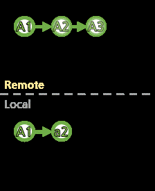
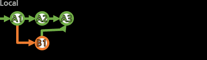
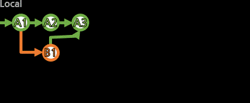

[branch]

Git의 가장 큰 특징인 Branch(줄기, 가지)를 만들고 사용한다.
> git branch 새로운_로컬브랜치명
> git branch a01
새로운 로컬 브랜치를 만든다.
(만들 뿐, 현재 작업 브랜치가 전환되진 않는다. 전환은 git checkout 브랜치명[checkout]으로)
로컬 HEAD가 가리키는 커밋을 공유하는 상태로 브랜치가 만들어진다.
git branch만으로 로컬브랜치들을 조회할 수 있다.
git branch -r로는 리모트브랜치를 볼 수 있고,
git branch -a로 전체 브랜치를 볼 수 있다.
> git branch -a
* a01<---- 현재 작업 중인 로컬브랜치 표시
main
remotes/origin/HEAD -> origin/main<---- origin 원격저장소가 현재 origin/main 브랜치를 가리키고 있음
remotes/origin/a01
remotes/origin/main
└─── 리모트브랜치는 저장소별명(origin)이 붙음
[로컬브랜치를 기존의 리모트브랜치와 연동시키려면]
> git branch -u 리모트브랜치 로컬브랜치
> git branch -u origin/a01 a01
Branch 'a01' set up to track remote branch 'a01' from 'origin'.
> git branch --set-upstream-to=리모트브랜치 로컬브랜치
> git branch --set-upstream-to=origin/a01 a01
Branch 'a01' set up to track remote branch 'a01' from 'origin'.
정말로 기존의 리모트브랜치를 사용하는 것이 맞는가는 아래의 전략 펼쳐보기를 참고하자.
(작업 위치를 옮겨서 설정하는 것이 아니라, 여러 명이 연동하려고 한다면 비추천...)
일반적인 것처럼 새로운 로컬브랜치가 새로운 리모트브랜치를 만들면서 연동되게 하려면 그냥 [push]에서 -u
[브랜치 사용 전략]
팀에서 사용하고자 하는 전략이 있을테니 성실히 따르도록 하고,
아직 브랜치에 대한 개념이 희미하다면 조금이나마 보태고자 적어본다.
"여러 명이 한 리모트브랜치에서 작업하는 것은 좋지 않다."

위의 이미지에서 붉게 표시되는 부분은 자신의 로컬 커밋이다.
로컬 커밋의 작성 시점과는 다른 충돌이 발생하여,
매 사용자가 매 순간 이러한 처리를 해줘야할 수 있다.
매 순간 이렇다면 굉장히 귀찮을 것은 물론이고,
Git은 브랜치를 적극적으로 활용하도록 하는데
굳이 적은 브랜치에 몰려서 이러는건 옳지 않아보인다.
"하나의 브랜치에서 병합을 담당한다면??"
브랜치 A에서만 병합을 한다면 서로 얽힐 일은 없겠지만,
브랜치 B에서는 A의 변동 사항이 적용되지 않은 채 계속 작업이 이뤄지므로
병합 과정에서 반복되는 수정 작업이 일어날 수 있다.
"브랜치끼리 서로 병합을 해간다면??"

브랜치 A와 B 모두 서로 병합을 한다면 서로의 변동 사항을 항상 적용할 수는 있지만,
병합의 주체가 없고 항상 시간순으로만 판단해야 하고
임시 커밋이라도 다른 쪽에 바로 반영되거나 헷갈릴 수 있다.
"부모 브랜치는 병합만을, 자식 브랜치는 작업만을"

작업은 자식 브랜치에서만 이뤄지도록 하고,
부모 브랜치에서는 이를 병합한다.
형제자식 브랜치 끼리의 충돌도 발생할 수 있으니,
병합은 너무 늦지는 않게, 자주 해주면
서로가 같은 파일을 다르게 바꿨을 때 그 괴리가 커지지 않게 조율시킬 수 있다.
(이건 협업에서 오는 필연적인 문제이고, 병합이 그걸 해결하는 방법이니...)
병합한 후에는 다시 병합 커밋에서 새로운 자식 브랜치들로 작업하면 더 깔끔하다.
(병합에서 충돌들이 해결된 상태라서)
브랜치가 많아질 수는 있어도, 도표로 보면 개념이 어렵지 않다.
이제 브랜치를 전환해서 사용해본다.

로컬 브랜치를 삭제하려면, 브랜치의 커밋들이 모두 push되어 있으며,
지금 로컬에서 사용 중이지 않은 상태로 둔다(checkout 으로 다른 브랜치를 향하거나, detach한다.).
> git branch -d(--delete) 지울_브랜치
위의 조건을 갖추지 않았다면, -d(--delete) 대신 -D(--delete --force)옵션을 사용한다.
아래의 명령어로 리모트 브랜치를 삭제할 수 있다.
> git push 저장소명 -d(--delete) 리모트브랜치
> git push origin -d(--delete) test1
To https://github.com/BlackdeerY/example.git
- [deleted] test1